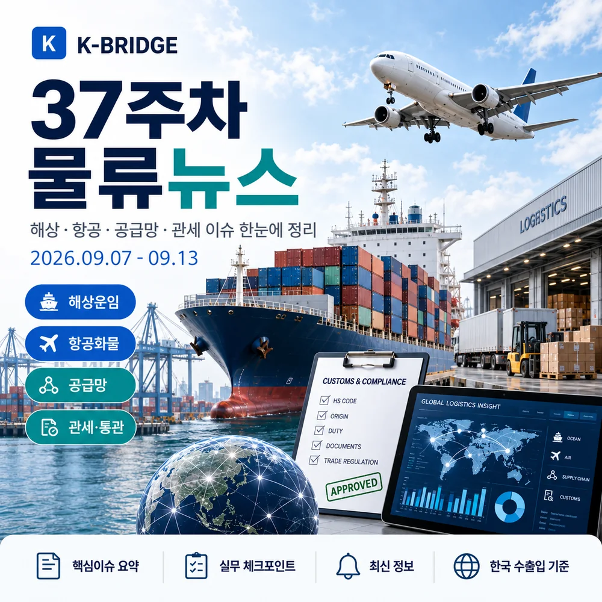
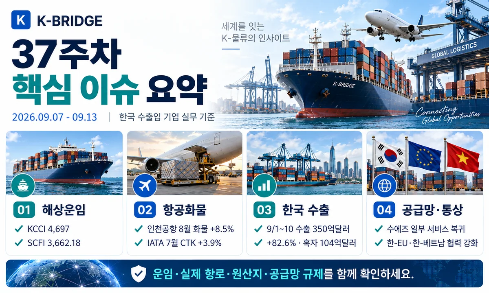
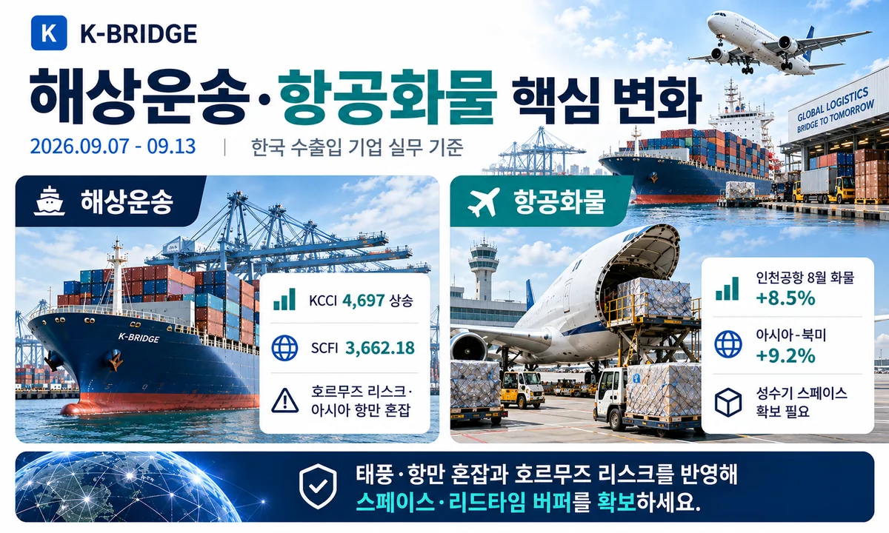
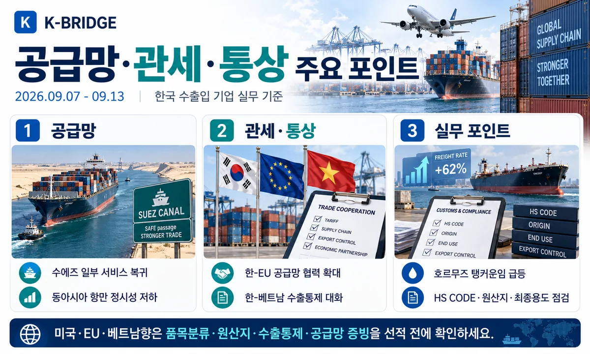
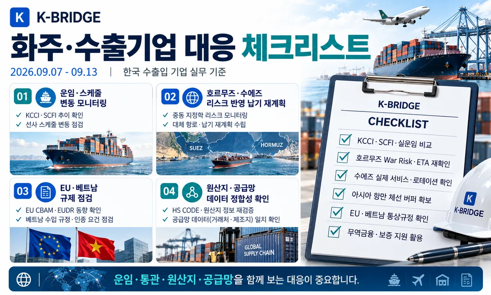

37주차 핵심 요약
KCCI는 4,697로 2.31% 상승했고 SCFI는 3,662.18로 2.01% 상승했습니다. 호르무즈 통항량은 9월 10일 7척으로 최근 10일 평균 15척을 크게 밑돌았고, 걸프-중국 VLCC 운임은 기록적 수준으로 급등했습니다. 반면 Maersk와 Hapag-Lloyd는 일부 서비스에서 수에즈 운항을 확대하고 있으나 전체 동서항로의 전면 복귀는 아닙니다. 국내에서는 9월 1~10일 수출이 350억달러(+82.6%)로 기간 기준 역대 최대를 기록했고, 중소·중견 수출기업에는 연내 120조원 규모 무역금융 지원이 확대됩니다.

1. 37주차 시장 한눈에 보기
37주차는 컨테이너 운임 상승과 항로별 리스크의 양극화가 뚜렷했습니다. 미주·중남미향 운임은 상승했지만 유럽·지중해는 약세였고, 중동에서는 호르무즈 리스크로 탱커 운임이 급등했습니다. 한편 일부 서비스가 수에즈로 복귀하면서 유럽향 리드타임 단축 가능성도 나타났지만, 동아시아 태풍·항만 혼잡으로 실제 정시성은 여전히 낮습니다.
| 지표 | 37주차 기준 | 변화 | 실무 해석 |
|---|---|---|---|
| KCCI | 4,697 | 9/7 · +2.31% | 미주·중남미 상승, 유럽·지중해 하락 |
| SCFI | 3,662.18 | 9/11 · +2.01% | 아시아발 스팟운임 상승 지속 |
| CCFI | 1,862.18 | 9/11 · +1.4% | 남미 +10.1%, 한국항로 +3.8% |
| 인천공항 화물 | 259,965톤 | 8월 · +8.5% | 출발 +10.6%, 전자·고부가 수요 견조 |
| 9/1~10 수출 | 350억달러 | +82.6% | 반도체 165억달러, 무역흑자 104억달러 |
| 호르무즈 | 7척 | 9/10 · 평균 15척 | 탱커 운임·보험·ETA 리스크 확대 |
2. 해상운송·글로벌 항로
KCCI 4,697 - 미주·중남미 강세
9월 7일 KCCI는 4,697로 전주 4,591보다 106포인트, 2.31% 상승했습니다. 미주 서안은 7,424(+3.07%), 미주 동안은 10,989(+4.84%), 중남미 동안은 8,514(+9.79%), 중남미 서안은 7,059(+6.10%)로 올랐습니다. 반면 유럽은 4,289(-5.01%), 지중해는 4,819(-8.61%)로 하락해 항로별 격차가 확대됐습니다.
SCFI 3,662.18 - 7주 연속 상승 흐름
상하이해운거래소의 9월 11일 SCFI는 3,662.18로 전주보다 72.13포인트, 약 2.01% 상승했습니다. CCFI도 1,862.18로 1.4% 상승했으며 남미 항로는 10.1%, 한국 항로는 3.8% 올랐습니다. 중국발 스팟운임 상승이 이어지고 있어 4분기 선적은 장기계약과 스팟운임을 함께 비교할 필요가 있습니다.
호르무즈 통항 7척 - VLCC 운임 기록적 급등
9월 10일 호르무즈 해협을 통항한 가시 상품선은 7척으로 최근 10일 평균 15척보다 크게 적었습니다. 같은 주 걸프 오만에서 중국으로 가는 VLCC 용선료는 Worldscale 450, 배럴당 약 11.5달러 수준까지 상승했습니다. 중동 원유·화학품 화주는 해상운임뿐 아니라 War Risk와 선박 가용성을 함께 확인해야 합니다.
수에즈 일부 서비스 복귀 - 전면 정상화는 아님
Maersk와 Hapag-Lloyd는 AE15·AE19 등 일부 Gemini 서비스를 수에즈운하 경유로 운영하고 있습니다. 9월 9일 Maersk는 이를 점진적인 trans-Suez 복귀의 일부라고 설명하면서도 동서항로 네트워크 전체가 수에즈로 복귀한 것은 아니라고 강조했습니다. 유럽향 화주는 실제 선박별 로테이션을 확인해야 합니다.
동아시아 태풍·항만 혼잡 - 아시아 주요 항만 정시성 저하
Maersk의 9월 시장 업데이트에 따르면 동아시아의 반복적인 태풍과 항만 체선으로 지역 주요 항만의 정시 입항률이 악화되고 있습니다. Sea-Intelligence를 인용한 자료에서는 아시아 14개 주요 항만 모두 정시 입항률이 낮아진 것으로 나타났습니다. 한국 화주도 중국·동남아 환적이 포함된 일정에 추가 버퍼를 잡는 편이 안전합니다.
사우디·걸프 항만 혼잡 - 내륙운송까지 파급
Jeddah와 King Abdullah Port의 화물량 증가가 컨테이너 반출과 트럭 회전시간을 늘리고 있습니다. 중동향 화물은 항만 도착 이후 통관·디포·내륙운송까지 연결되는 일정에 여유가 필요하며, Riyadh·Dammam·Bahrain·Kuwait 연계 운송은 노선별 반입조건을 확인해야 합니다.

3. 항공화물 시장
인천공항 8월 화물 259,965톤 - 전년 대비 8.5% 증가
인천국제공항공사 공식 통계에서 8월 화물은 259,965톤으로 전년 대비 8.5% 증가했습니다. 도착 화물은 129,586톤(+6.6%), 출발 화물은 130,380톤(+10.6%)으로 수출 항공화물 증가폭이 더 컸습니다. 중국 관련 화물은 48,889톤으로 집계됐습니다.
IATA 최신 공식치 - 글로벌 CTK +3.9%, 아시아-북미 +9.2%
IATA의 최신 글로벌 월간 자료인 7월 실적에서 항공화물 수요는 전년 대비 3.9%, 아시아·태평양은 4.1%, 아시아-북미는 9.2% 증가했습니다. 반면 중동-아시아는 -14.1%, 유럽-중동은 -16.1%로 감소해 중동 경유 노선은 여전히 변동성이 큽니다.
4. 한국 수출·무역금융
9월 1~10일 수출 350억달러 - 기간 기준 역대 최대
관세청 잠정치에서 9월 1~10일 수출은 349억 7,300만달러로 전년 대비 82.6% 증가했습니다. 수입은 246억달러(+20.7%), 무역수지는 103억 7천만달러 흑자입니다. 반도체 수출은 165억달러로 같은 기간 역대 최대를 기록했습니다.
누적 수출 7,094억달러 - 지난해 연간 실적 조기 돌파
산업통상부는 9월 5일 13시 기준 2026년 수출이 7,094억달러를 기록해 2025년 연간 수출 7,093억달러를 248일 만에 넘어섰다고 밝혔습니다. 수출 증가세는 선복, 항공 스페이스, 창고, 내륙운송 등 물류 전반의 용량 확보 필요성을 높입니다.
중소·중견 수출기업 무역금융 연내 120조원
정부는 중소·중견기업에 올해 120조원, 내년 140조원 규모의 무역금융을 공급할 계획입니다. 특례보증은 올해 3,500억원, 내년 4,500억원으로 확대하고, 중소 조선사 선수금환급보증(RG)도 내년 1조원 규모로 지원합니다. 운임·원부자재 가격 상승기에 자금조달 수단으로 활용할 수 있습니다.

5. 공급망·관세·통상
한-EU 산업경쟁력·공급망 협력 확대
산업통상부는 9월 10일 EU 측과 산업가속화법(IAA), 한-EU 경쟁력 파트너십과 고위급 경제대화 등을 논의했습니다. EU향 수출기업은 역내 산업정책이 원산지·조달·현지생산 조건에 미치는 영향을 모니터링하고, 공급망 데이터와 현지 파트너 정보를 정리할 필요가 있습니다.
한-베트남 첫 수출통제대화 - 현지 공급망 규정 변화 대비
9월 11일 열린 제1차 한-베트남 수출통제대화에서는 베트남의 수출통제 제도 시행과 한국 기업 지원이 논의됐습니다. 베트남 생산거점과 부품 공급망을 운영하는 기업은 전략물자·이중용도 품목, 최종사용자와 최종용도 확인 절차를 사전에 정비해야 합니다.
한국, 복수국간 그린경제협정 협상 참여
한국은 9월 11일 그린경제 분야의 통상규범과 무역·투자 확대를 다루는 복수국간 그린경제협정 협상 참여를 공식화했습니다. 향후 친환경 상품·서비스, 탄소 관련 규범이 공급망과 무역서류에 반영될 가능성이 있어 EU CBAM 등과 함께 중장기적으로 봐야 합니다.
미국-캐나다 자동차 통상갈등 확대 - 북미 공급망 점검 필요
미국은 9월 8일 캐나다 자동차 관련 일부 상품에 대한 조치를 추가 발표했으며 일부 품목은 9월 29일부터 미국 수입이 제한됩니다. 한국산 완제품에 직접 적용되는 조치는 아니지만, 캐나다산 부품을 사용하는 미국 현지 생산·조달망에는 영향을 줄 수 있어 북미 자동차 공급망의 원산지와 부품 조달구조를 확인해야 합니다.

6. 화주·수출기업 대응 체크리스트
- 해상: KCCI·SCFI와 실제 선사 견적을 함께 비교하고 미주·중남미는 스페이스와 Free Time을 조기에 확인합니다.
- 호르무즈: 에너지·석유화학 화물은 War Risk, 탱커 가용성, 보험, ETA 버퍼를 항차별로 확인합니다.
- 수에즈: 일부 서비스만 복귀 중이므로 선사·서비스명·선박별 실제 로테이션을 확인합니다.
- 아시아 항만: 태풍과 체선으로 정시성이 떨어진 만큼 중국·동남아 환적은 연결시간을 넉넉하게 잡습니다.
- 항공: 인천 출발 화물 증가와 아시아-북미 수요 강세를 반영해 고부가·긴급화물 스페이스를 사전 확보합니다.
- EU·베트남: 산업정책·수출통제 변화에 맞춰 HS CODE, 원산지, 최종사용자, 최종용도 자료를 정리합니다.
- 금융: 무역보험과 특례보증을 활용해 높은 운임·원부자재 비용에 따른 운전자금 부담을 분산합니다.
7. 자주 묻는 질문
Q. 2026년 37주차 KCCI는 얼마인가요?
Q. 수에즈운하 항로가 정상화된 상태인가요?
Q. 이번 주 중동 화물은 무엇을 가장 먼저 확인해야 하나요?
운임이 오를 때는 실제 항로와 공급망까지 확인해야 합니다
케이브릿지는 해상·항공·통관·국내운송을 연결해 운임과 선복뿐 아니라 호르무즈·수에즈 리스크, 항만 혼잡, 원산지·수출통제 조건까지 함께 검토합니다.